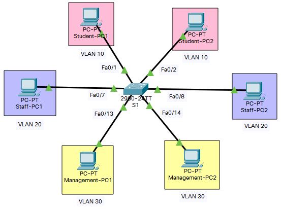

AIM
- Configure Basic Settings
- Verify the Default VLAN Configuration
- Configure VLANs
- Assign VLANs to Ports
TOPOLOGY

VLAN TABLE
| VLAN ID |
VLAN Name |
Network Address |
Subnet Mask |
Ports to be assigned |
| 10 |
Student |
192.168.10.0 |
255.255.255.0 |
S1: Fa0/1-6 |
| 20 |
Staff |
192.168.20.0 |
255.255.255.0 |
S1: Fa0/7-12 |
| 30 |
Management |
192.168.30.0 |
255.255.255.0 |
S1: Fa0/13-18 |
| 88 |
Unused |
NOT APPLICABLE |
S1: Fa0/19-24, G0/1-2 |
ADDRESSING TABLE
| Device |
Interface |
IP Address |
Subnet Mask |
Description |
| S1 |
VLAN 30 |
192.168.30.254 |
255.255.255.0 |
SVI for S1 Management |
| Student-PC1 |
NIC |
192.168.10.10 |
255.255.255.0 |
Connected to S1 Fa0/1 |
| Student-PC2 |
NIC |
192.168.10.11 |
255.255.255.0 |
Connected to S1 Fa0/2 |
| Staff-PC1 |
NIC |
192.168.20.10 |
255.255.255.0 |
Connected to S1 Fa0/7 |
| Staff-PC2 |
NIC |
192.168.20.11 |
255.255.255.0 |
Connected to S1 Fa0/8 |
| Management-PC1 |
NIC |
192.168.30.10 |
255.255.255.0 |
Connected to S1 Fa0/13 |
| Management-PC2 |
NIC |
192.168.30.11 |
255.255.255.0 |
Connected to S1 Fa0/14 |
S1 CONFIGURATION
Switch>enable
Switch#conf t
Switch(config)#hostname S1
S1(config)#vlan 10
S1(config-vlan)#name Student
S1(config-vlan)#vlan 20
S1(config-vlan)#name Staff
S1(config-vlan)#vlan 30
S1(config-vlan)#name Management
S1(config-vlan)#vlan 88
S1(config-vlan)#name Unused
S1(config-vlan)#interface range fa0/1-6
S1(config-if-range)#switchport mode access
S1(config-if-range)#switchport access vlan 10
S1(config-if-range)#description VLAN10 for Students
S1(config-if-range)#interface range fa0/7-12
S1(config-if-range)#switchport mode access
S1(config-if-range)#switchport access vlan 20
S1(config-if-range)#description VLAN20 for Staff
S1(config-if-range)#interface range fa0/13-18
S1(config-if-range)#switchport mode access
S1(config-if-range)#switchport access vlan 30
S1(config-if-range)#description VLAN30 for Management
S1(config-if-range)#interface range fa0/19-24,g0/1-2
S1(config-if-range)#switchport mode access
S1(config-if-range)#switchport access vlan 88
S1(config-if-range)#description VLAN88 for Unused Ports
S1(config-if-range)#shutdown
S1(config-if-range)#interface vlan 30
S1(config-if)#ip address 192.168.30.254 255.255.255.0
S1(config-if)#end
S1#copy run start
STUDENT-PC1 IP CONFIGURATION
IPv4 Address: 192.168.10.10
Subnet Mask: 255.255.255.0
STUDENT-PC2 IP CONFIGURATION
IPv4 Address: 192.168.10.11
Subnet Mask: 255.255.255.0
STAFF-PC1 IP CONFIGURATION
IPv4 Address: 192.168.20.10
Subnet Mask: 255.255.255.0
STAFF-PC2 IP CONFIGURATION
IPv4 Address: 192.168.20.11
Subnet Mask: 255.255.255.0
MANAGEMENT-PC1 IP CONFIGURATION
IPv4 Address: 192.168.30.10
Subnet Mask: 255.255.255.0
MANAGEMENT-PC2 IP CONFIGURATION
IPv4 Address: 192.168.30.11
Subnet Mask: 255.255.255.0
SHOW COMMANDS USED
S1#Show vlan brief
S1#Show running-config
PING RESULT
| Ping from |
To |
Destination IP |
Succeeded Yes/No |
| Student-PC1 |
Student-PC2 |
192.168.10.11 |
Yes |
| Staff-PC1 |
192.168.20.10 |
No |
| Staff-PC2 |
192.168.20.11 |
No |
| Management-PC1 |
192.168.30.10 |
No |
| Management-PC2 |
192.168.30.11 |
No |
| S1 |
192.168.30.254 |
No |
| Staff-PC1 |
Staff-PC2 |
192.168.20.11 |
Yes |
| Management-PC1 |
192.168.30.10 |
No |
| Management-PC2 |
192.168.30.11 |
No |
| S1 |
192.168.30.254 |
No |
| Management-PC1 |
Management-PC2 |
192.168.30.11 |
Yes |
| S1 |
192.168.30.254 |
Yes |
RESULT
Verified the Default VLAN Configuration, Configured VLANs, and Assign VLANs to Ports successfully.